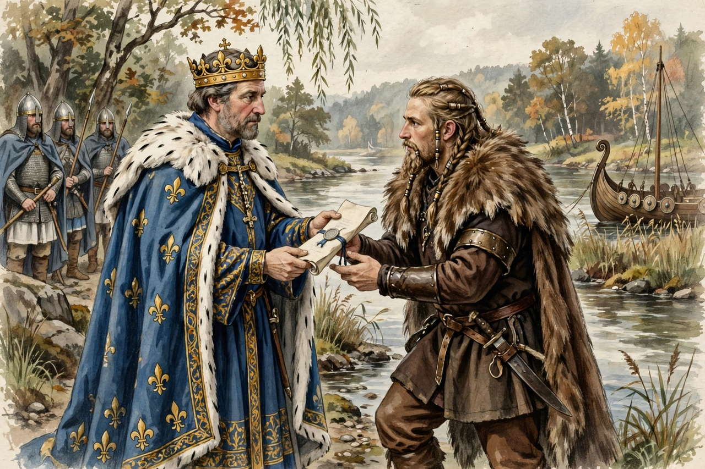

From Wikipedia, the free encyclopedia
The Treaty of Saint-Clair-sur-Epte (911) was an agreement between King Charles the Simple of West Francia and the Viking leader Rollo. It established Rollo and his Norse followers in the lower Seine valley — the nucleus of the future Duchy of Normandy — in exchange for an end to Viking raids and the defence of the river against other Norsemen.

For decades, Viking fleets had sailed up the Seine to raid Paris and the Frankish heartlands. Unable to expel Rollo's army, which had besieged Paris and Chartres, Charles chose negotiation. The meeting took place at Saint-Clair-sur-Epte, on the Epte river, the border between the royal domain and the lands to be granted.
According to the chronicler Dudo of Saint-Quentin, Charles granted Rollo the territory around Rouen between the Epte and the sea — roughly the area of the future Upper Normandy. Rollo agreed to be baptised, to swear fealty to the king, to defend the Seine against other Vikings, and to allow his followers to settle. Later chroniclers added the famous anecdote that Rollo, required to kiss the king's foot, instead lifted it so forcefully that Charles fell backwards — a story more celebrated than reliable. Further grants in 924 and 933 extended Norman territory to include the Cotentin and the Bessin.
The treaty is conventionally taken as the founding act of Normandy. Within two generations Rollo's descendants ruled a powerful, centralised duchy, and in 1066 one of them, William the Conqueror, took the English crown — making the treaty one of the most consequential land grants of the early Middle Ages.
See also: Charles the Simple · Duchy of Normandy · Rollo · Rouen